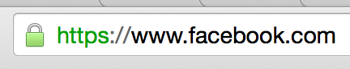

Nous avons réalisé un petit site, il est temps de le mettre en ligne
Comment ça fonctionne ?
Pour que notre site soit accessible dans le monde entier, il va falloir le stoquer chez un hébergeur
Nous allons mettre les fichiers HTML/CSS/JS/etc. sur un ordinateur relié à Internet
Lorsqu'un visiteur va taper l'URL du site, la requête va suivre un chemin défini par les DNS pour aboutir sur l'ordinateur qui stock no fichier
Ces fichiers seront ensuite envoyés à l'utilisateur
Il existe énormément de solutions d'hébergement avec de nombreux critères
Et le Cloud?
Le cloud est devenu un terme marketing pouvant correspondre à tout et n'importe quoi
L'idée principale est la "scalabilité"
L'espace stockage et la force de calcul peuvent être adaptés au besoin
Pour un site simple, un hébergement mutualisé fait largement l'affaire
Ce choix n'est pas définitif, il sera toujours possible de migrer vers une autre offre en temps voulu
Souscrire à un hébergement mutualisé ne prend que quelques minutes et quelques euros
Pour envoyer les fichiers sur un hébergement classique, on utilise en général un protocol FTP
(File Transfer Protocol)
Dans le cadre du cours, un domaine/sous domaine a été créé : esin-p2026.bruno-simon.com
Ce domaine pointe dans un dossier particulier de mon hébergement
Des accès FTP ont aussi été créés et nous les verrons plus tard
Nous allons avoir besoin d'un logiciel (ou client)
FileZilla est le plus connu
Gratuit et compatible avec Windows et Mac
Vous pouvez maintenant glisser les fichiers sur la partie de droite pour les envoyer sur le serveur
Votre site est en ligne : https://esin-p2026.bruno-simon.com/
Il est possible de sous-traiter l'hébergement par une agence qui s'occupera de trouver la meilleure offre et de la gérer pour vous
Offre personnalisée en générale coûteuse et inefficace
L'intégration continue (continuous integration) consiste à automatiser les différents processus de développement
Cela peut concerner le développement, le versionning, les tests, le déploiement, et bien d'autres choses
Dans le cadre de l'hébergement, il s'agit en général de déployer automatiquement quand vous faites un commit
Déploiement basé sur Git
Quand vous modifiez le repository, Netlify se met à jour automatiquement
Il est possible de spécifier une branche particulière, un dossier particulier et une commande à lancer (si vous utilisez un bundler)
Il est aussi possible d'associer un nom de domaine
Exactement comme Netlify
Directement intégré à GitHub
AWS est la solution d'hébergement "cloud" de Amazon
Il s'agit d'un très grand nombre de services ayant chacun une utilité particulière dans le cadre d'un hébergement
La compréhension et mise en place de ces services est très difficile, mais les serveurs sont robustes et "scallables"
Le paiement se fait à l'utilisation
AWS est utilisé pour des gros projets, et pas forcément des sites
Vous pouvez utiliser AWS pour traiter de la donnée, machine learning, stocker des sauvegardes, compresser des vidéos, entant que serveur de jeux en lignes, pour versionner vos projets, etc.
Le modèle économique est intéressant car, si vous avez peu d'activité, vous ne paierez presque rien, mais si vous avez du succès, les charges peuvent vite monter
On appelle "sites statiques" des sites composés de fichiers statiques tels que HTML, CSS, JS, images, fonts, etc. (pas de développement back)
Aussi appelés "single page application" (SPA)
👉 Hébergements avec intégration continue (Vercel, Netlify, GitHub Pages)
Si votre site nécessite des features telles que connexion, base de données, panier, scores, etc., il faut en général les développées avec un language back tel que PHP
👉 Hébergements classique (o2switch, OVH, 1and1)
Si votre site est complexe, nécessite beaucoup de calculs, nécessite de faire tourner un serveur sur lequel des joueurs peuvent se connecter, fait de l'IA, traite de la vidéo, etc.
👉 AWS
Correspond à l'adresse de votre site (ex : bruno-simon.com)
Ne pas confondre avec le sous-domaine
(ex : sous-domaine.bruno-simon.com)
Les sous-domaines sont en général gratuits et illimités
Vous avez peut-être intérêt à avoir plusieurs nom de domaines tout de suite
Fonctionne comme le disque dur de votre ordinateur
Si votre site n'a rien de spécial, n'importe quel espace suffira
Si votre site contient des vidéos HD, une grande quantité d'images ou laisse la possibilité aux utilisateurs d'envoyer des fichiers, il faudra peut-être prévoir plus large
Capacité à prendre en charge les visites
⚠️ Arnaque
Capacité à faire des calculs (si vous traitez beaucoup de donnée)
Si votre site utilise du PHP, il faut que le serveur le supporte
Les offres comprennnent en général PHP, parfois Python et Ruby
Il existe plusieurs versions de ces languages. Vérifiez que celle du site correspond à celle de l'hébergeur
Content Delivery Network
Duplication des contenus statiques du site (images, vidéos, ...) sur différents serveurs à travers le monde
Permet d'avoir un site rapide quelque soit la position géographique
Utile pour les sites internationaux
Si votre site utilise une base de données (SQL)
Permet d'encrypter les requêtes
Lorsque vous naviguez sur un site, tout ce que vous envoyez et recevez peut être intercepté facilement
L'encryptage SSL permet d'éviter ça
L'accès à votre site ne se fait plus par http://, mais par https://
C'est le cas de Facebook, Google, Twitter, Youtube

Les hébergeurs vont essayer de vous vendre plein de services
https://pmd-2022.bruno-simon.com/blog/
Certains hébergeurs vous feront créer le nom de domaine directement durant l'inscription
Le nom de domaine peut être pris à part de l'hébergement, mais ça complique souvent la tâche
Un nom de domaine peut mettre plusieurs minutes voir plusieurs heures pour se mettre en place
Ce délais change selon le pays
On parle de propagation DNS, c'est le temps que mettent les serveurs à travers le monde pour apprendre l'URL de votre site
Depuis quelques années, il est possible d'acheter des extensions autres que .com, .fr, .org, etc.
.buzz .bar .clothing .guide .club .sexy .xxx .pizza .beer .vodka .ninja
En général illimités (ou presque) et gratuits
Permet d'associer un site à un domaine
(ex : blog.monsite.com ou forum.monsite.com)
www est un sous-domaine